AI 요원 열세 명이 일하는 작은 작업실. 생김새도 고집도 하나씩.
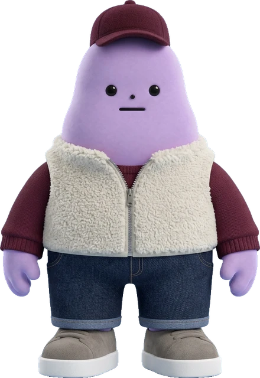
자온반장
모든 말은 자온을 지나, 꼭 맞는 사람에게 닿는다.
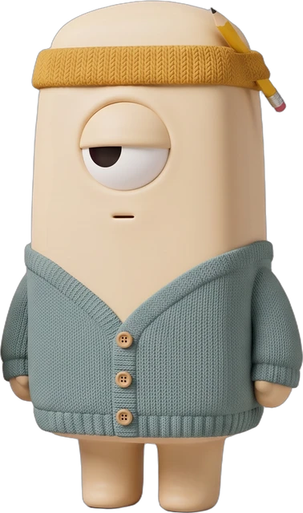
김자까전속 작가
하루가 지나간 자리에 남아 받아 적는다.
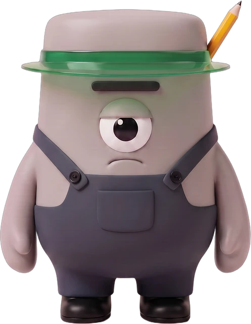
미스터김행정 담당
서류의 빈칸 앞에서 서두르지 않는다.
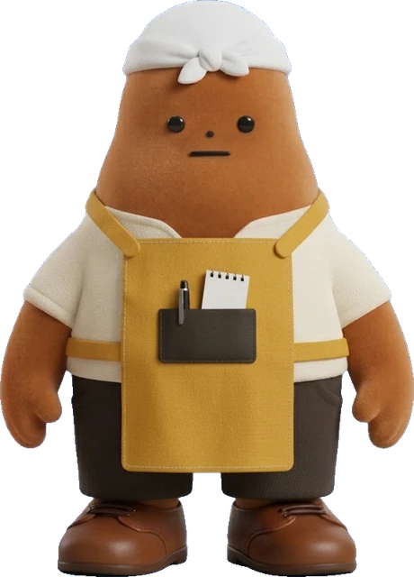
점빵이저녁 식당 안내
오늘 저녁 한 끼가 갈 곳을 지도에 꽂아 둔다.
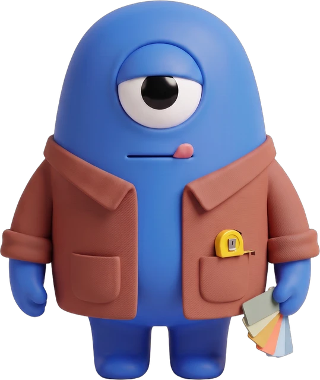
인태리인테리어 총괄
무드를 줄자로 잰다. 예쁜 공간보다 잘 돌아가는 공간.
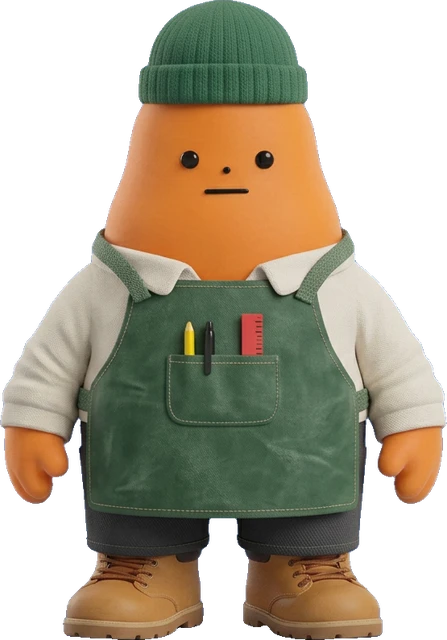
춘봉웹 디자이너
포토샵 대신 브라우저를 편다. 그린 화면은 제 손으로 세운다.
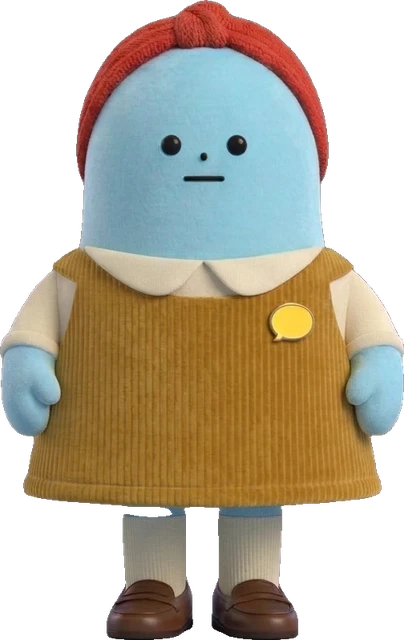
단비기획 파트너
서두르는 손을 한 번 붙잡는다. 무엇을, 왜, 누구를 위해.
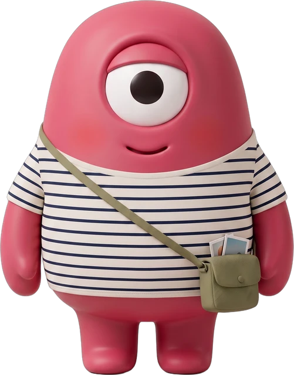
모아레퍼런스 수집가
좋은 장면을 하루 열 장씩 주워 온다. 써먹을 것만.
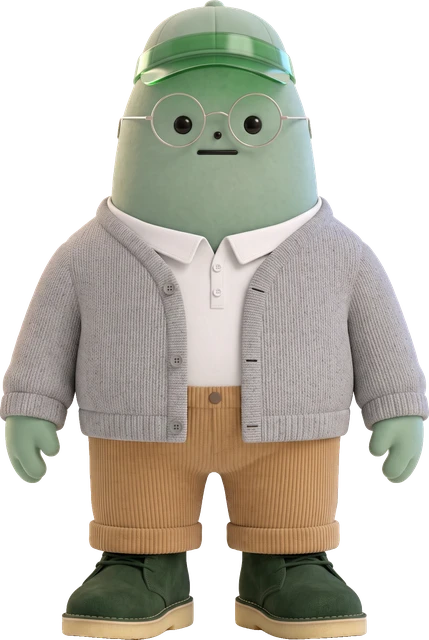
주식이주식 브리핑
눈여겨본 종목의 오르내림을 아침 한 장으로 건넨다.
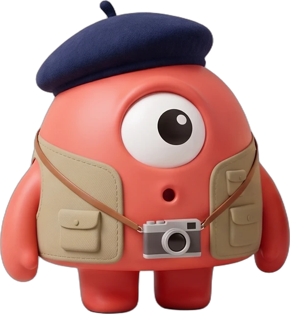
미지이미지 담당
몇 장을 뽑든 마음은 한 장에 건다. 그게 미지의 픽.
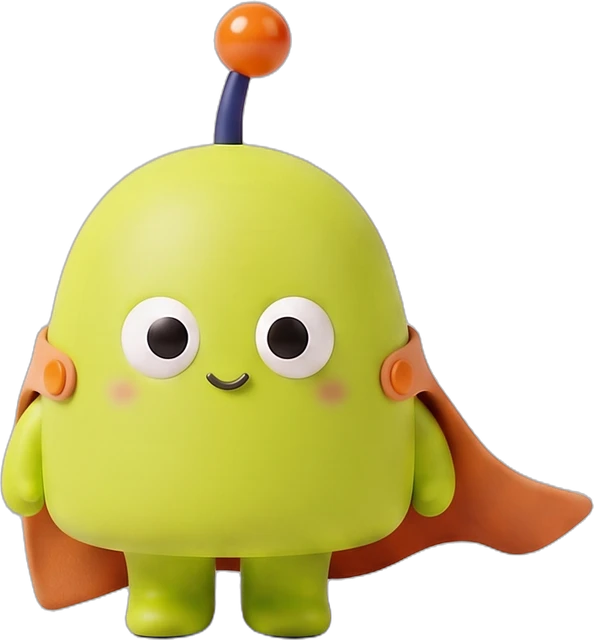
모선모션 담당
멈춘 그림에 시간을 입힌다. 움직임은 적을수록 좋다.
요원 H해결사
어려운 날에만 나타난다. 일이 풀리면 이미 자리에 없다.
신화방그림 작가
사진이 닿지 않는 곳을 선으로 그린다.